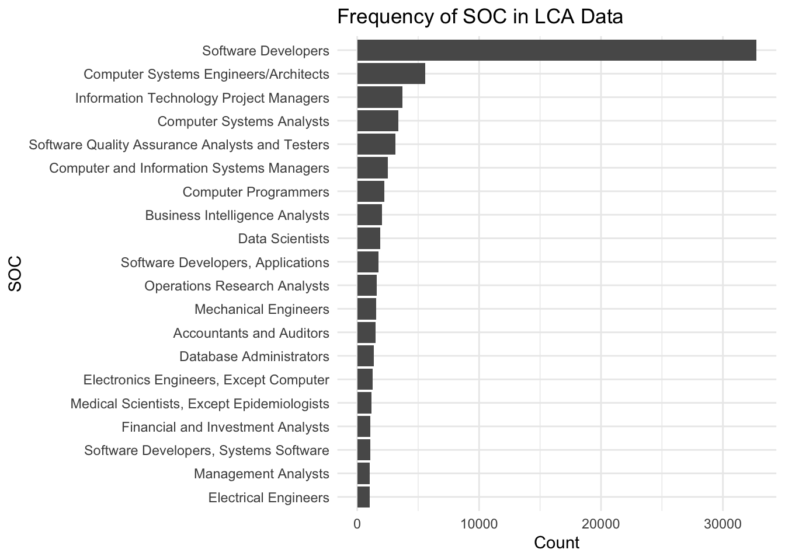

# A tibble: 6 × 2
SOC_TITLE n
<chr> <int>
1 Software Developers 32756
2 Computer Systems Engineers/Architects 5562
3 Information Technology Project Managers 3706
4 Computer Systems Analysts 3360
5 Software Quality Assurance Analysts and Testers 3135
6 Computer and Information Systems Managers 2531
Code
#SOC vs Freqsoc_freq|>slice_max(n, n =20) |>ggplot(aes(x =reorder(SOC_TITLE, n), y = n)) +geom_col() +coord_flip() +labs(title ="Frequency of SOC in LCA Data",x ="SOC",y ="Count" ) +theme_minimal()

Code
# 1. Filter only SOC = "Software Developers"software_dev <- lca %>%filter(SOC_TITLE =="Software Developers")# 2. Get frequency of job titles within this SOCjob_freq <- software_dev %>%filter(!is.na(JOB_TITLE), JOB_TITLE !="") %>%count(JOB_TITLE, sort =TRUE)# Optional: peek at top titleshead(job_freq, 10)